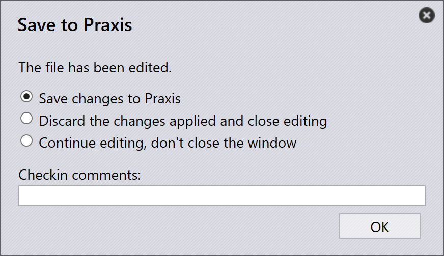

Tooling validation
This section describes how to access and modify the tooling information for parts in TruSmartCAM.
-
Right-click on any part tile to open the part panel and access tooling options.

-
Click Toolings to switch to the first available tooled instance.
-
Alternatively, click directly on a tooled instance to view machine details and tooling options.
-
Use
 to
Open in read-only mode for viewing.
to
Open in read-only mode for viewing. -
Use
 to
Check-out the document for editing.
to
Check-out the document for editing. -
The selected tooled instance opens in TecZone or MetaCAM.
-
Perform manual tooling checks and make necessary changes.
-
When you attempt to save, an Unsaved Changes dialog prompts you to confirm your edits.

-
Click Yes to proceed with saving.
-
The system performs Tooling Validation again after saving.
-
If there are no errors, the option to Save changes to TruSmartCAM appears.

-
If tooling errors are found, an error message is shown:

-
After saving, the parts tooling status is updated in the part library.
-
A green color on the tooled instance indicates it is checked-in.

-
The Tooled Instance Author is updated to the last person who edited it.
-
The User-edited field indicates whether the tooled instance has been manually modified. When a user checks out the instance and makes any changes, this field is automatically set to Yes upon saving.

-
If a part is currently being edited, a user icon appears on its tile.

-
Hovering over the tile shows who checked it out and the time it was checked out.
-
While the part is checked out, the
Check-out the document for editing option is disabled
for the same tooled instance, and the  Cancel Check-out option becomes enabled.
Cancel Check-out option becomes enabled.